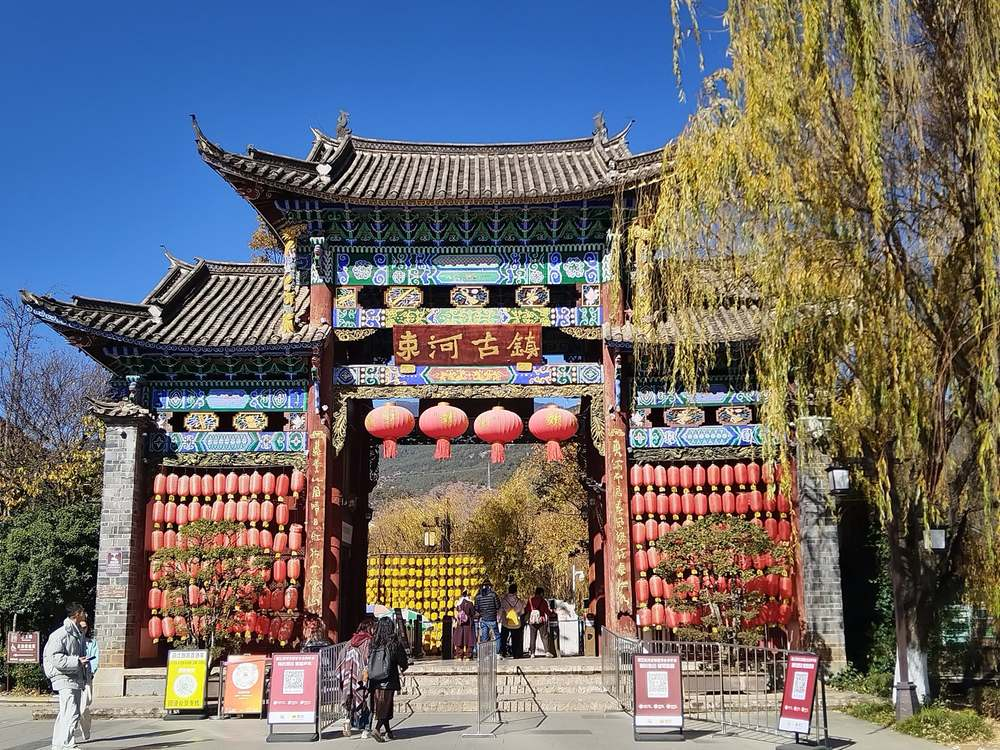
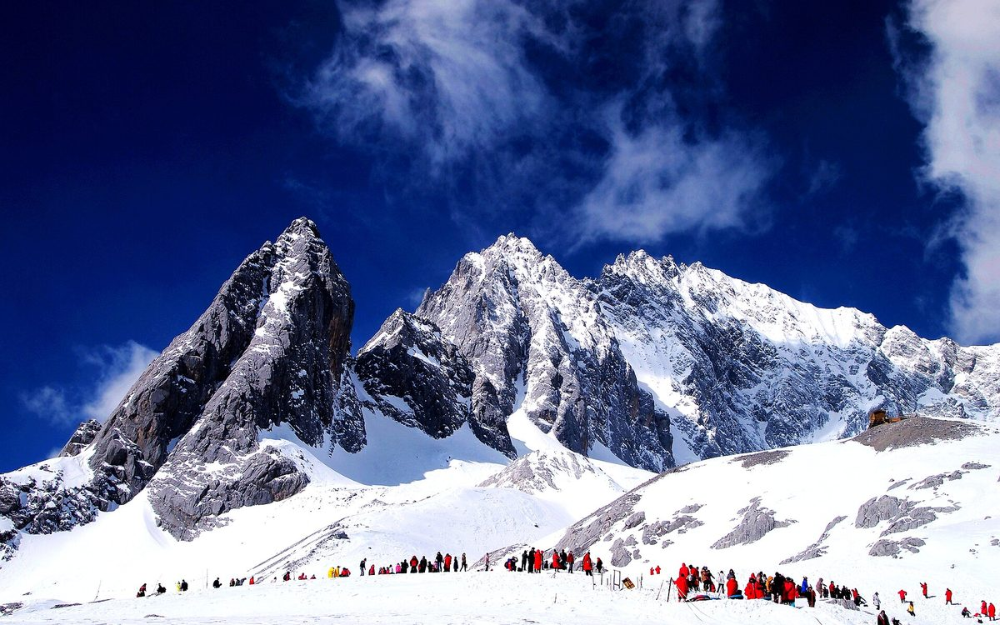
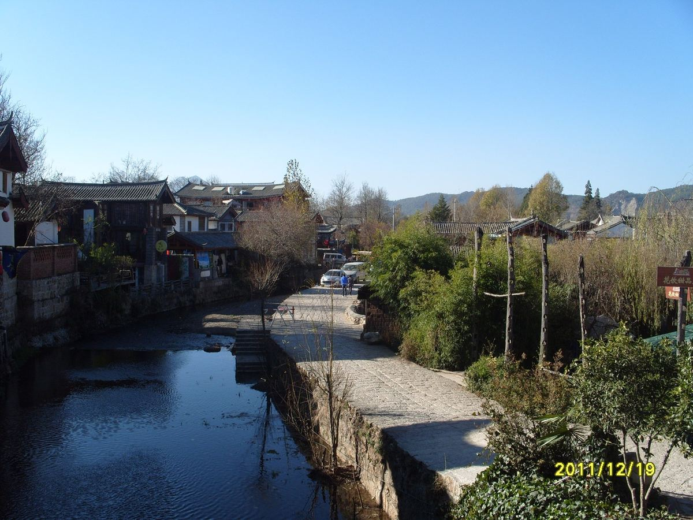
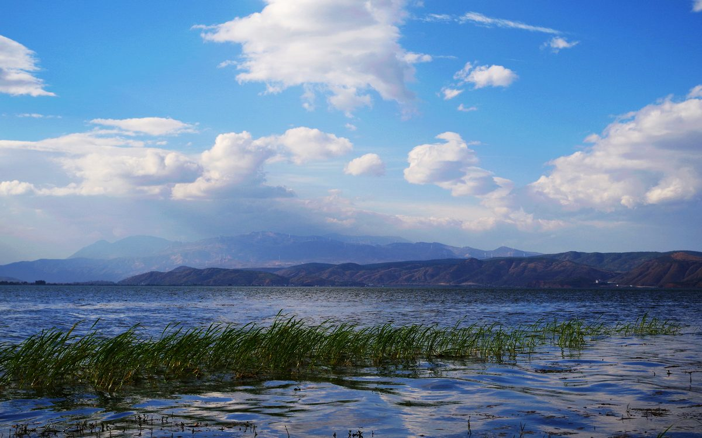
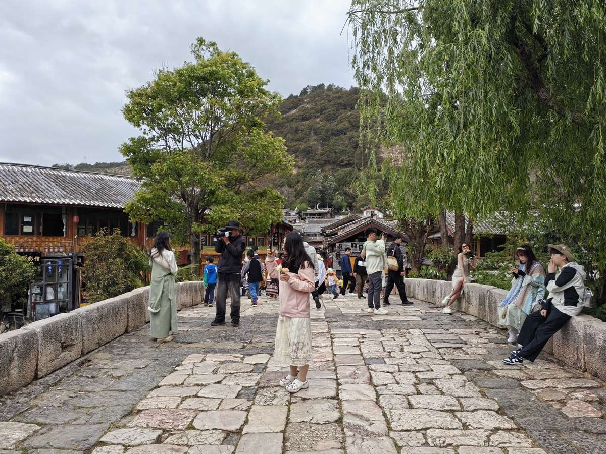
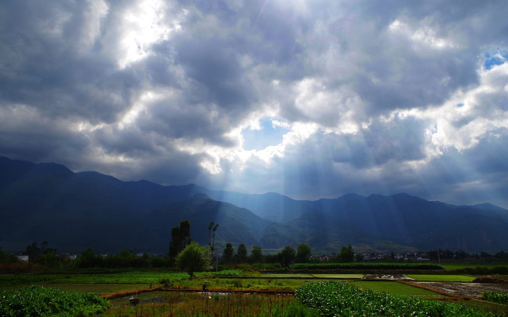
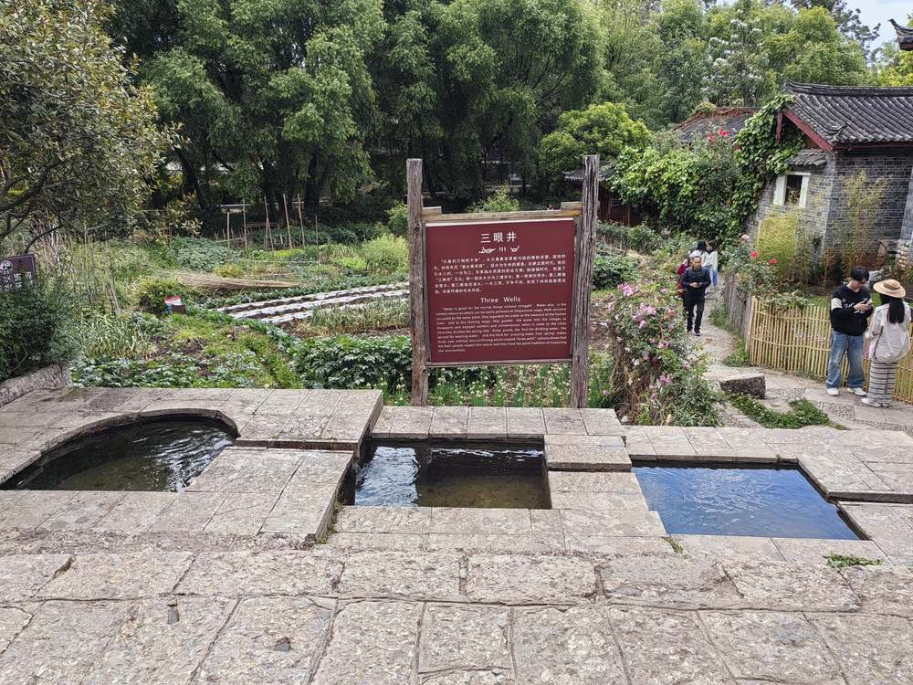
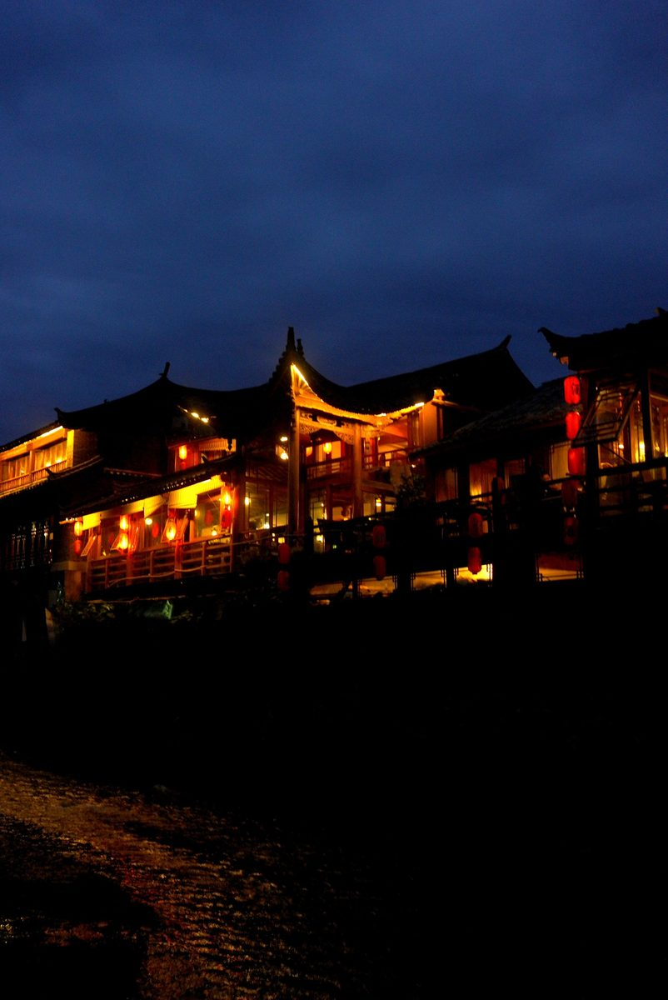
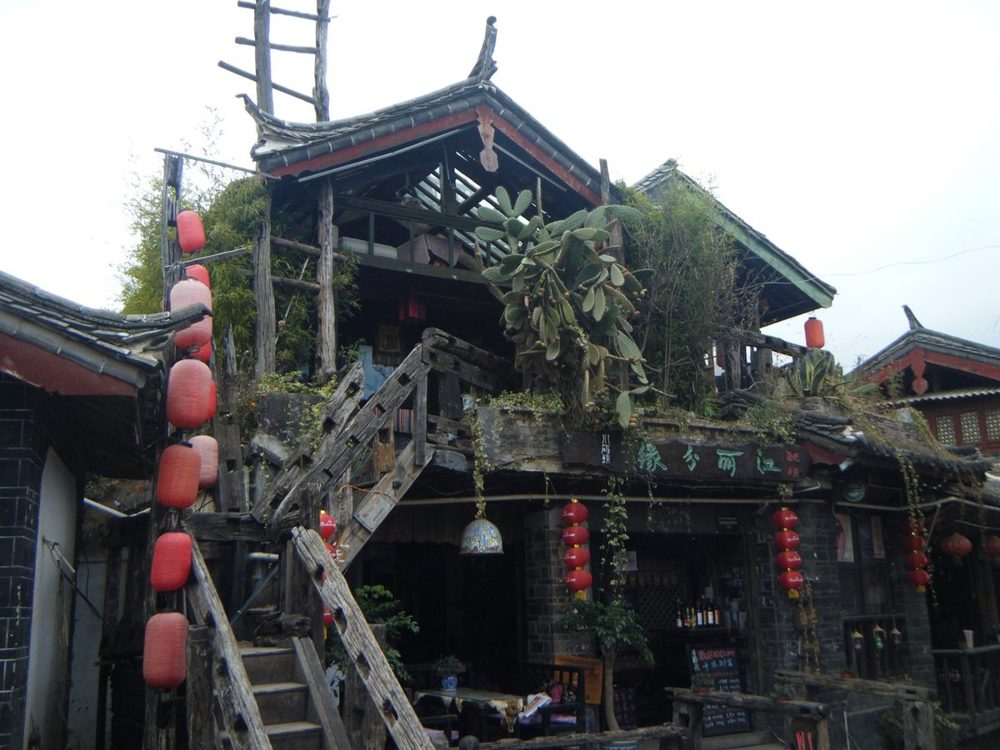

D1 · 抵达约 2400 米
成都飞到丽江三义机场，去束河或白沙住下，先适应海拔。
- 5 人加行李，4 座往往不够，可订 7 座接机。
- 也可坐机场大巴到束河，20 元/人；去白沙需到束河再转 6 路或打车。
- 合住一套，慢慢适应（束河一带约 2400 米）。

WINTER JOURNEY
先上玉龙雪山，再坐高铁去洱海、苍山。当地可坐公交、包车，也可以自己开车。
玉龙雪山
Ma Martin CC BY-SA 3.0
阅读
这次怎么走
成都飞丽江，住束河或白沙，上雪山；再坐高铁去大理，住海边。
3 人可合住一间；4–5 人仍住两居整套。
可能不来；如果来，在蓝月谷等，不上大索道和苍山。
路线地图
标记按海拔上色。点标记看名字、海拔和那天做什么。也可点下面的日程卡片，地图会跟过去。
地图没能加载。下面按天列出地点，详细行程见日程卡片。
坐标尽量用公开标注，没有编造。玉湖村没查到可靠的单点坐标，地图上暂不标，行程里仍可去。

成都飞到丽江三义机场，去束河或白沙住下，先适应海拔。

睡到自然醒。在束河、白沙转转，也可去玉湖村远看雪山。

上冰川公园大索道，下午走蓝月谷。须排在同行朋友 1 月 7 日回日本之前。

坐高铁去大理，二等座 80 元，约 2 小时。住洱海边，喜洲或双廊都行。

走环海西路，在双廊或喜洲转转。住在海边，不必赶场。

可选苍山索道：感通较低、较轻松；洗马潭可到约 3900 米，上面别久留。
点卡片看细节，并在地图上高亮这一天。D5 配图是束河石桥，仅作气氛，不是双廊实地。
| 项目 | 怎么算 | 总价或单价 | 3 人人均 | 4 人人均 | 5 人人均 |
|---|---|---|---|---|---|
| 长途交通去程约 290–400 元/人，丽江—大理 80 元，返程预留 300–700 元/人 | 按每人收 | 670–1180 元/人 | 670–1180 | 670–1180 | 670–1180 |
| 丽江用车（对照：包车一天）大象包车市内价：5 座 650 元、7 座 850 元；玉龙未单列。自驾日租本页未能打开，不编数字 | 总账平摊 | 3–4 人按 5 座 650；5 人按 7 座 850 | 约 217 | 约 163 | 约 170 |
| 油费·过路费·停车仅自驾。束河往返甘海子约 50–60 公里，预留 40–80 元。过路费按 0。新游客中心暂不收费 | 总账平摊 | 约 40–80 元（自驾时） | 约 13–27 | 约 10–20 | 约 8–16 |
| 门票玉龙雪山 100 元/人。苍山门票常见含在索道套票里 | 按每人收 | 100 元/人 | 100 | 100 | 100 |
| 索道（含景区摆渡车）玉龙摆渡 20＋大索道 120，加苍山感通 100 或洗马潭约 260–320，约 240–460 元/人。高反朋友如来，该人只计摆渡 20 元 | 按每人收 | 240–460 元/人 | 240–460 | 240–460 | 240–460 |
| 吃饭按每人每天 80–150 元、5–6 天估算 | 按每人收 | 400–900 元/人 | 400–900 | 400–900 | 400–900 |
| 住宿（丽江 3 晚＋大理 2 晚）3 人：丽江合住一间 666–1113（222–371×3）＋大理 1976＝2642–3089。4 人住两居 2720–3953。5 人住「涵香＋归心」4433（节日约 5393） | 总账平摊 | 见上行说明 | 881–1030 | 680–988 | 887–1079 |
| 合计（不含丽江用车）公交或 101 路另计。含包车一天对照时，约再加 163–217 元/人 | — | — | 2291–3670 | 2090–3628 | 2297–3719 |
| 合计（含包车一天对照） | — | — | 2508–3887 | 2253–3791 | 2467–3889 |
住宿分日（木鸟民宿日历，2026 年 11 月 10 日查到）。大理两晚都按「洱海边／花海旁白族民居大院」988×2＝1976。
5 人中位约 16728 元，仅作总盘参考。
3 人可以合住一间带三张床或双人床＋单人床的房间。下面是木鸟民宿 2026 年 11 月 10 日查到的日历价，12 月 26–30 日与 1 月 4–7 日相同。
222 元/晚 · 三晚 666 元
236 元/晚 · 三晚 708 元
249 元/晚 · 三晚 747 元
371 元/晚 · 三晚 1113 元
12/26–31：248 元/晚；1/4–7：284 元；1/1–3：580 元
12/26–31：659 元/晚；1/4–7：631 元（三晚 1893）；1/1–3：784 元
12/26–30 与 1/4–7：819 元/晚（三晚 2457）；12/31–1/3：1139 元
12/26–1/12 日历均为 988 元/晚，两晚 1976 元。近环海西路。
以上是平台日历价，不是下单瞬间的成交价，出发前请再核。
博主说法仅供参考（包括高反用药），出发前以官方和医生建议为准。



束河门口灯笼另见行程 D1，作者 Xiaoding413，CC0。束河青龙桥见 D5 配图，作者 Yumeto，CC BY-SA 4.0。
出处